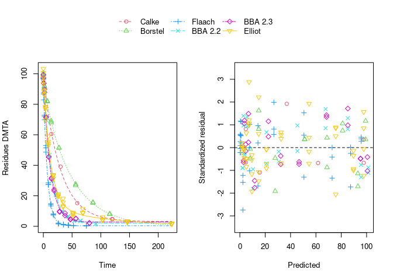

Example evaluations of the dimethenamid data from 2018
Johannes Ranke
Last change 1 July 2022, built on 13 Feb 2025
Source:vignettes/web_only/dimethenamid_2018.rmd
dimethenamid_2018.rmdWissenschaftlicher Berater, Kronacher Str. 12, 79639 Grenzach-Wyhlen, Germany
Introduction
A first analysis of the data analysed here was presented in a recent
journal article on nonlinear mixed-effects models in degradation
kinetics (Ranke et al. 2021). That
analysis was based on the nlme package and a development
version of the saemix package that was unpublished at the
time. Meanwhile, version 3.0 of the saemix package is
available from the CRAN repository. Also, it turned out that there was
an error in the handling of the Borstel data in the mkin package at the
time, leading to the duplication of a few data points from that soil.
The dataset in the mkin package has been corrected, and the interface to
saemix in the mkin package has been updated to use the
released version.
This vignette is intended to present an up to date analysis of the
data, using the corrected dataset and released versions of
mkin and saemix.
Data
Residue data forming the basis for the endpoints derived in the conclusion on the peer review of the pesticide risk assessment of dimethenamid-P published by the European Food Safety Authority (EFSA) in 2018 (EFSA 2018) were transcribed from the risk assessment report (Rapporteur Member State Germany, Co-Rapporteur Member State Bulgaria 2018) which can be downloaded from the Open EFSA repository https://open.efsa.europa.eu/study-inventory/EFSA-Q-2014-00716.
The data are available in the mkin package. The following code (hidden by default, please use the button to the right to show it) treats the data available for the racemic mixture dimethenamid (DMTA) and its enantiomer dimethenamid-P (DMTAP) in the same way, as no difference between their degradation behaviour was identified in the EU risk assessment. The observation times of each dataset are multiplied with the corresponding normalisation factor also available in the dataset, in order to make it possible to describe all datasets with a single set of parameters.
Also, datasets observed in the same soil are merged, resulting in dimethenamid (DMTA) data from six soils.
library(mkin, quietly = TRUE)
dmta_ds <- lapply(1:7, function(i) {
ds_i <- dimethenamid_2018$ds[[i]]$data
ds_i[ds_i$name == "DMTAP", "name"] <- "DMTA"
ds_i$time <- ds_i$time * dimethenamid_2018$f_time_norm[i]
ds_i
})
names(dmta_ds) <- sapply(dimethenamid_2018$ds, function(ds) ds$title)
dmta_ds[["Elliot"]] <- rbind(dmta_ds[["Elliot 1"]], dmta_ds[["Elliot 2"]])
dmta_ds[["Elliot 1"]] <- NULL
dmta_ds[["Elliot 2"]] <- NULLParent degradation
We evaluate the observed degradation of the parent compound using simple exponential decline (SFO) and biexponential decline (DFOP), using constant variance (const) and a two-component variance (tc) as error models.
Separate evaluations
As a first step, to get a visual impression of the fit of the different models, we do separate evaluations for each soil using the mmkin function from the mkin package:
f_parent_mkin_const <- mmkin(c("SFO", "DFOP"), dmta_ds,
error_model = "const", quiet = TRUE)
f_parent_mkin_tc <- mmkin(c("SFO", "DFOP"), dmta_ds,
error_model = "tc", quiet = TRUE)The plot of the individual SFO fits shown below suggests that at least in some datasets the degradation slows down towards later time points, and that the scatter of the residuals error is smaller for smaller values (panel to the right):

Using biexponential decline (DFOP) results in a slightly more random scatter of the residuals:

The population curve (bold line) in the above plot results from taking the mean of the individual transformed parameters, i.e. of log k1 and log k2, as well as of the logit of the g parameter of the DFOP model). Here, this procedure does not result in parameters that represent the degradation well, because in some datasets the fitted value for k2 is extremely close to zero, leading to a log k2 value that dominates the average. This is alleviated if only rate constants that pass the t-test for significant difference from zero (on the untransformed scale) are considered in the averaging:

While this is visually much more satisfactory, such an average procedure could introduce a bias, as not all results from the individual fits enter the population curve with the same weight. This is where nonlinear mixed-effects models can help out by treating all datasets with equally by fitting a parameter distribution model together with the degradation model and the error model (see below).
The remaining trend of the residuals to be higher for higher predicted residues is reduced by using the two-component error model:

However, note that in the case of using this error model, the fits to the Flaach and BBA 2.3 datasets appear to be ill-defined, indicated by the fact that they did not converge:
print(f_parent_mkin_tc["DFOP", ])<mmkin> object
Status of individual fits:
dataset
model Calke Borstel Flaach BBA 2.2 BBA 2.3 Elliot
DFOP OK OK OK OK C OK
C: Optimisation did not converge:
iteration limit reached without convergence (10)
OK: No warningsNonlinear mixed-effects models
Instead of taking a model selection decision for each of the individual fits, we fit nonlinear mixed-effects models (using different fitting algorithms as implemented in different packages) and do model selection using all available data at the same time. In order to make sure that these decisions are not unduly influenced by the type of algorithm used, by implementation details or by the use of wrong control parameters, we compare the model selection results obtained with different R packages, with different algorithms and checking control parameters.
nlme
The nlme package was the first R extension providing facilities to fit nonlinear mixed-effects models. We would like to do model selection from all four combinations of degradation models and error models based on the AIC. However, fitting the DFOP model with constant variance and using default control parameters results in an error, signalling that the maximum number of 50 iterations was reached, potentially indicating overparameterisation. Nevertheless, the algorithm converges when the two-component error model is used in combination with the DFOP model. This can be explained by the fact that the smaller residues observed at later sampling times get more weight when using the two-component error model which will counteract the tendency of the algorithm to try parameter combinations unsuitable for fitting these data.
library(nlme)
f_parent_nlme_sfo_const <- nlme(f_parent_mkin_const["SFO", ])
# f_parent_nlme_dfop_const <- nlme(f_parent_mkin_const["DFOP", ])
f_parent_nlme_sfo_tc <- nlme(f_parent_mkin_tc["SFO", ])
f_parent_nlme_dfop_tc <- nlme(f_parent_mkin_tc["DFOP", ])Note that a certain degree of overparameterisation is also indicated by a warning obtained when fitting DFOP with the two-component error model (‘false convergence’ in the ‘LME step’ in iteration 3). However, as this warning does not occur in later iterations, and specifically not in the last of the 5 iterations, we can ignore this warning.
The model comparison function of the nlme package can directly be applied to these fits showing a much lower AIC for the DFOP model fitted with the two-component error model. Also, the likelihood ratio test indicates that this difference is significant as the p-value is below 0.0001.
anova(
f_parent_nlme_sfo_const, f_parent_nlme_sfo_tc, f_parent_nlme_dfop_tc
) Model df AIC BIC logLik Test L.Ratio p-value
f_parent_nlme_sfo_const 1 5 796.60 811.82 -393.30
f_parent_nlme_sfo_tc 2 6 798.60 816.86 -393.30 1 vs 2 0.00 0.998
f_parent_nlme_dfop_tc 3 10 671.91 702.34 -325.95 2 vs 3 134.69 <.0001In addition to these fits, attempts were also made to include correlations between random effects by using the log Cholesky parameterisation of the matrix specifying them. The code used for these attempts can be made visible below.
f_parent_nlme_sfo_const_logchol <- nlme(f_parent_mkin_const["SFO", ],
random = nlme::pdLogChol(list(DMTA_0 ~ 1, log_k_DMTA ~ 1)))
anova(f_parent_nlme_sfo_const, f_parent_nlme_sfo_const_logchol)
f_parent_nlme_sfo_tc_logchol <- nlme(f_parent_mkin_tc["SFO", ],
random = nlme::pdLogChol(list(DMTA_0 ~ 1, log_k_DMTA ~ 1)))
anova(f_parent_nlme_sfo_tc, f_parent_nlme_sfo_tc_logchol)
f_parent_nlme_dfop_tc_logchol <- nlme(f_parent_mkin_const["DFOP", ],
random = nlme::pdLogChol(list(DMTA_0 ~ 1, log_k1 ~ 1, log_k2 ~ 1, g_qlogis ~ 1)))
anova(f_parent_nlme_dfop_tc, f_parent_nlme_dfop_tc_logchol)While the SFO variants converge fast, the additional parameters introduced by this lead to convergence warnings for the DFOP model. The model comparison clearly show that adding correlations between random effects does not improve the fits.
The selected model (DFOP with two-component error) fitted to the data assuming no correlations between random effects is shown below.
plot(f_parent_nlme_dfop_tc)saemix
The saemix package provided the first Open Source implementation of the Stochastic Approximation to the Expectation Maximisation (SAEM) algorithm. SAEM fits of degradation models can be conveniently performed using an interface to the saemix package available in current development versions of the mkin package.
The corresponding SAEM fits of the four combinations of degradation and error models are fitted below. As there is no convergence criterion implemented in the saemix package, the convergence plots need to be manually checked for every fit. We define control settings that work well for all the parent data fits shown in this vignette.
library(saemix)Loading required package: npdePackage saemix, version 3.3, March 2024
please direct bugs, questions and feedback to emmanuelle.comets@inserm.fr
Attaching package: 'saemix'The following objects are masked from 'package:npde':
kurtosis, skewness
saemix_control <- saemixControl(nbiter.saemix = c(800, 300), nb.chains = 15,
print = FALSE, save = FALSE, save.graphs = FALSE, displayProgress = FALSE)
saemix_control_moreiter <- saemixControl(nbiter.saemix = c(1600, 300), nb.chains = 15,
print = FALSE, save = FALSE, save.graphs = FALSE, displayProgress = FALSE)
saemix_control_10k <- saemixControl(nbiter.saemix = c(10000, 300), nb.chains = 15,
print = FALSE, save = FALSE, save.graphs = FALSE, displayProgress = FALSE)The convergence plot for the SFO model using constant variance is shown below.
f_parent_saemix_sfo_const <- mkin::saem(f_parent_mkin_const["SFO", ], quiet = TRUE,
control = saemix_control, transformations = "saemix")
plot(f_parent_saemix_sfo_const$so, plot.type = "convergence")Obviously the selected number of iterations is sufficient to reach convergence. This can also be said for the SFO fit using the two-component error model.
f_parent_saemix_sfo_tc <- mkin::saem(f_parent_mkin_tc["SFO", ], quiet = TRUE,
control = saemix_control, transformations = "saemix")
plot(f_parent_saemix_sfo_tc$so, plot.type = "convergence")
When fitting the DFOP model with constant variance (see below), parameter convergence is not as unambiguous.
f_parent_saemix_dfop_const <- mkin::saem(f_parent_mkin_const["DFOP", ], quiet = TRUE,
control = saemix_control, transformations = "saemix")
plot(f_parent_saemix_dfop_const$so, plot.type = "convergence")
print(f_parent_saemix_dfop_const)Kinetic nonlinear mixed-effects model fit by SAEM
Structural model:
d_DMTA/dt = - ((k1 * g * exp(-k1 * time) + k2 * (1 - g) * exp(-k2 *
time)) / (g * exp(-k1 * time) + (1 - g) * exp(-k2 * time)))
* DMTA
Data:
155 observations of 1 variable(s) grouped in 6 datasets
Likelihood computed by importance sampling
AIC BIC logLik
706 704 -344
Fitted parameters:
estimate lower upper
DMTA_0 97.99583 96.50079 99.4909
k1 0.06377 0.03432 0.0932
k2 0.00848 0.00444 0.0125
g 0.95701 0.91313 1.0009
a.1 1.82141 1.60516 2.0377
SD.DMTA_0 1.64787 0.45729 2.8384
SD.k1 0.57439 0.24731 0.9015
SD.k2 0.03296 -2.50524 2.5712
SD.g 1.10266 0.32354 1.8818While the other parameters converge to credible values, the variance
of k2 (omega2.k2) converges to a very small value. The
printout of the saem.mmkin model shows that the estimated
standard deviation of k2 across the population of soils
(SD.k2) is ill-defined, indicating overparameterisation of
this model.
When the DFOP model is fitted with the two-component error model, we
also observe that the estimated variance of k2 becomes very small, while
being ill-defined, as illustrated by the excessive confidence interval
of SD.k2.
f_parent_saemix_dfop_tc <- mkin::saem(f_parent_mkin_tc["DFOP", ], quiet = TRUE,
control = saemix_control, transformations = "saemix")
f_parent_saemix_dfop_tc_moreiter <- mkin::saem(f_parent_mkin_tc["DFOP", ], quiet = TRUE,
control = saemix_control_moreiter, transformations = "saemix")
plot(f_parent_saemix_dfop_tc$so, plot.type = "convergence")
print(f_parent_saemix_dfop_tc)Kinetic nonlinear mixed-effects model fit by SAEM
Structural model:
d_DMTA/dt = - ((k1 * g * exp(-k1 * time) + k2 * (1 - g) * exp(-k2 *
time)) / (g * exp(-k1 * time) + (1 - g) * exp(-k2 * time)))
* DMTA
Data:
155 observations of 1 variable(s) grouped in 6 datasets
Likelihood computed by importance sampling
AIC BIC logLik
666 664 -323
Fitted parameters:
estimate lower upper
DMTA_0 98.24165 96.29190 100.1914
k1 0.06421 0.03352 0.0949
k2 0.00866 0.00617 0.0111
g 0.95340 0.91218 0.9946
a.1 1.06463 0.87979 1.2495
b.1 0.02964 0.02266 0.0366
SD.DMTA_0 2.03611 0.40361 3.6686
SD.k1 0.59534 0.25692 0.9338
SD.k2 0.00042 -73.00540 73.0062
SD.g 1.04234 0.37189 1.7128Doubling the number of iterations in the first phase of the algorithm leads to a slightly lower likelihood, and therefore to slightly higher AIC and BIC values. With even more iterations, the algorithm stops with an error message. This is related to the variance of k2 approximating zero and has been submitted as a bug to the saemix package, as the algorithm does not converge in this case.
An alternative way to fit DFOP in combination with the two-component error model is to use the model formulation with transformed parameters as used per default in mkin. When using this option, convergence is slower, but eventually the algorithm stops as well with the same error message.
The four combinations (SFO/const, SFO/tc, DFOP/const and DFOP/tc) and the version with increased iterations can be compared using the model comparison function of the saemix package:
AIC_parent_saemix <- saemix::compare.saemix(
f_parent_saemix_sfo_const$so,
f_parent_saemix_sfo_tc$so,
f_parent_saemix_dfop_const$so,
f_parent_saemix_dfop_tc$so,
f_parent_saemix_dfop_tc_moreiter$so)Likelihoods calculated by importance sampling
rownames(AIC_parent_saemix) <- c(
"SFO const", "SFO tc", "DFOP const", "DFOP tc", "DFOP tc more iterations")
print(AIC_parent_saemix) AIC BIC
SFO const 796.38 795.34
SFO tc 798.38 797.13
DFOP const 705.75 703.88
DFOP tc 665.67 663.59
DFOP tc more iterations 665.85 663.76In order to check the influence of the likelihood calculation algorithms implemented in saemix, the likelihood from Gaussian quadrature is added to the best fit, and the AIC values obtained from the three methods are compared.
f_parent_saemix_dfop_tc$so <-
saemix::llgq.saemix(f_parent_saemix_dfop_tc$so)
AIC_parent_saemix_methods <- c(
is = AIC(f_parent_saemix_dfop_tc$so, method = "is"),
gq = AIC(f_parent_saemix_dfop_tc$so, method = "gq"),
lin = AIC(f_parent_saemix_dfop_tc$so, method = "lin")
)
print(AIC_parent_saemix_methods) is gq lin
665.67 665.74 665.13 The AIC values based on importance sampling and Gaussian quadrature are very similar. Using linearisation is known to be less accurate, but still gives a similar value.
In order to illustrate that the comparison of the three method depends on the degree of convergence obtained in the fit, the same comparison is shown below for the fit using the defaults for the number of iterations and the number of MCMC chains.
When using OpenBlas for linear algebra, there is a large difference in the values obtained with Gaussian quadrature, so the larger number of iterations makes a lot of difference. When using the LAPACK version coming with Debian Bullseye, the AIC based on Gaussian quadrature is almost the same as the one obtained with the other methods, also when using defaults for the fit.
f_parent_saemix_dfop_tc_defaults <- mkin::saem(f_parent_mkin_tc["DFOP", ])
f_parent_saemix_dfop_tc_defaults$so <-
saemix::llgq.saemix(f_parent_saemix_dfop_tc_defaults$so)
AIC_parent_saemix_methods_defaults <- c(
is = AIC(f_parent_saemix_dfop_tc_defaults$so, method = "is"),
gq = AIC(f_parent_saemix_dfop_tc_defaults$so, method = "gq"),
lin = AIC(f_parent_saemix_dfop_tc_defaults$so, method = "lin")
)
print(AIC_parent_saemix_methods_defaults) is gq lin
670.09 669.37 671.29 Comparison
The following table gives the AIC values obtained with both backend packages using the same control parameters (800 iterations burn-in, 300 iterations second phase, 15 chains).
AIC_all <- data.frame(
check.names = FALSE,
"Degradation model" = c("SFO", "SFO", "DFOP", "DFOP"),
"Error model" = c("const", "tc", "const", "tc"),
nlme = c(AIC(f_parent_nlme_sfo_const), AIC(f_parent_nlme_sfo_tc), NA, AIC(f_parent_nlme_dfop_tc)),
saemix_lin = sapply(list(f_parent_saemix_sfo_const$so, f_parent_saemix_sfo_tc$so,
f_parent_saemix_dfop_const$so, f_parent_saemix_dfop_tc$so), AIC, method = "lin"),
saemix_is = sapply(list(f_parent_saemix_sfo_const$so, f_parent_saemix_sfo_tc$so,
f_parent_saemix_dfop_const$so, f_parent_saemix_dfop_tc$so), AIC, method = "is")
)
kable(AIC_all)| Degradation model | Error model | nlme | saemix_lin | saemix_is |
|---|---|---|---|---|
| SFO | const | 796.60 | 796.60 | 796.38 |
| SFO | tc | 798.60 | 798.60 | 798.38 |
| DFOP | const | NA | 704.95 | 705.75 |
| DFOP | tc | 671.91 | 665.13 | 665.67 |
Conclusion
A more detailed analysis of the dimethenamid dataset confirmed that the DFOP model provides the most appropriate description of the decline of the parent compound in these data. On the other hand, closer inspection of the results revealed that the variability of the k2 parameter across the population of soils is ill-defined. This coincides with the observation that this parameter cannot robustly be quantified for some of the soils.
Regarding the regulatory use of these data, it is claimed that an improved characterisation of the mean parameter values across the population is obtained using the nonlinear mixed-effects models presented here. However, attempts to quantify the variability of the slower rate constant of the biphasic decline of dimethenamid indicate that the data are not sufficient to characterise this variability to a satisfactory precision.
Session Info
R version 4.4.2 (2024-10-31)
Platform: x86_64-pc-linux-gnu
Running under: Debian GNU/Linux 12 (bookworm)
Matrix products: default
BLAS: /usr/lib/x86_64-linux-gnu/blas/libblas.so.3.11.0
LAPACK: /usr/lib/x86_64-linux-gnu/lapack/liblapack.so.3.11.0
locale:
[1] LC_CTYPE=de_DE.UTF-8 LC_NUMERIC=C
[3] LC_TIME=C LC_COLLATE=de_DE.UTF-8
[5] LC_MONETARY=de_DE.UTF-8 LC_MESSAGES=de_DE.UTF-8
[7] LC_PAPER=de_DE.UTF-8 LC_NAME=C
[9] LC_ADDRESS=C LC_TELEPHONE=C
[11] LC_MEASUREMENT=de_DE.UTF-8 LC_IDENTIFICATION=C
time zone: Europe/Berlin
tzcode source: system (glibc)
attached base packages:
[1] stats graphics grDevices utils datasets methods base
other attached packages:
[1] saemix_3.3 npde_3.5 nlme_3.1-166 mkin_1.2.9 knitr_1.49
loaded via a namespace (and not attached):
[1] gtable_0.3.6 jsonlite_1.8.9 dplyr_1.1.4 compiler_4.4.2
[5] tidyselect_1.2.1 parallel_4.4.2 gridExtra_2.3 jquerylib_0.1.4
[9] systemfonts_1.1.0 scales_1.3.0 textshaping_0.4.1 yaml_2.3.10
[13] fastmap_1.2.0 lattice_0.22-6 ggplot2_3.5.1 R6_2.5.1
[17] generics_0.1.3 lmtest_0.9-40 MASS_7.3-61 htmlwidgets_1.6.4
[21] tibble_3.2.1 desc_1.4.3 munsell_0.5.1 bslib_0.8.0
[25] pillar_1.9.0 rlang_1.1.4 utf8_1.2.4 cachem_1.1.0
[29] xfun_0.49 fs_1.6.5 sass_0.4.9 cli_3.6.3
[33] pkgdown_2.1.1 magrittr_2.0.3 digest_0.6.37 grid_4.4.2
[37] mclust_6.1.1 lifecycle_1.0.4 vctrs_0.6.5 evaluate_1.0.1
[41] glue_1.8.0 codetools_0.2-20 ragg_1.3.3 zoo_1.8-12
[45] fansi_1.0.6 colorspace_2.1-1 rmarkdown_2.29 pkgconfig_2.0.3
[49] tools_4.4.2 htmltools_0.5.8.1